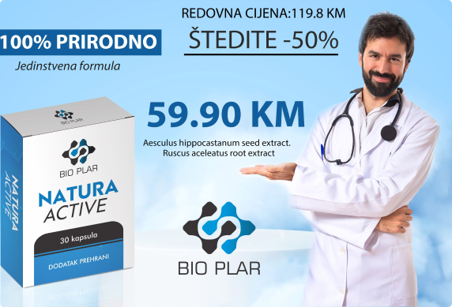

Natura Active kapsule kao sigurno rješenje u liječenju hemoroida
Stvorili smo Natura Active kapsule sa idejom da korisnicima
ponudimo kvalitetno I prirodno rješenje za hemoroide koji svrbe,
bole, krvare ili koji su uvećani.
U ovom slučaju u pitanju je preparat koji je nastao iz
tradicionalne medicine koja je tražila narodni lijek za probleme
sa hemoroidima, bilo da su unutrašnji ili spoljašnji.
Natura Active kapsule se koriste kao dodatak ishrani i kao
dodatak klasičnoj medicinskoj terapiji kod uvećanih hemoroida,
hemoroida koji krvare, kod terapija za razbijanje trombova, za
omekšavanje hemoroidalnog tkiva i spleta vena i njihovo jačanje.
Nije dovoljno samo zaustaviti krvarenje iz hemoroida i svrab
anusa. Potrebno je da se hemoroid smanji i nestane, da se vene
pročiste i skupe, da se ponovo stvori normalno funkcionisanje
analnog otvora. Za to služe ljekovite biljke koje se nalaze u
proizvodu Natura Active kapsule
Na osnovu stepena vase bolesti, kao I drugih bitnih faktora
preporučit ćemo vam koliko dugo je potrebno da koristite ove kapsule
kako bi došlo do poboljšanja vašeg zdravstvenog stanja.

Ispunite obrazac za narudžbu
Uzroci nastanka hemoroida
Najčešći uzrok nastanka hemoroida je naprezanje kod crijevne
peristaltike (pokreta crijeva). Dodatni elementi su trudnoća,
nasljedstvo, starenje, kronični zatvor, proljev, dugotrajno
sjedenje, analne infekcije. Hemoroidi mogu biti vanjski ili
unutarnji. Unutarnji nastaju blizu početka analnog kanala, a
vanjski na analnom otvoru. Hemoroidi katkad izbiju izvan anusa.
Sklonost nastanku proširenja lumena krvnih žila u i oko anusa
uvjetovana je konstitucijski, što potvrđuje činjenica da u venama
manjkaju zalisci koji omogućuju bolje pražnjenje krvi. Dodatni
anatomski uzroci su zastoj krvi u portalnoj cirkulaciji (kao kod
ciroze jetre) te razne druge promjene koje dovode do pritiska na
vene male zdjelice (kao što su neki tumori).
Tko obolijeva?
Hemoroidi su vrlo česti i kad žena i kod muškaraca. Polovica
populacije u dobi iznad 50 godina ima hemoroide. Incidencija ove
bolesti je 2 na 1000 ljudi. Hemoroidi su posebno česti kod trudnica.
Pritisak čeda na tu regiju, ako i hormonalne promjene, te sam porod,
uzrokuju povećanje hemoroidalnih krvnih žila. Kod većine žena koje
imaju hemoroide povezane s trudnoćom, oni su privremeni problem, ali
znaju biti veoma bolan...
Simptomi hemoroida
Neki ljudi koji imaju hemoroide, nemaju simptome. Simptomi
unutarnjih hemoroida su: stolica prekrivena svijetlom krvi, krv
na WC-papiru ili na WC-školjki.
Međutim, unutarnji hemoroidi mogu izbiti van iz anusa i tada
mogu početi iritirati i biti bolni.
Simptomi vanjskih hemoroida uključuju bolno oticanje i bolnu
tvorbu oko anusa, nastalu od zgrušane krvi. Cijelo područje je
osjetljivo, bolno i svrbi.
Zbog izraženih arteriovenskih shuntova, krv kod unutarnjih
hemoroida je obično svijetlocrvene boje, a vrlo često brizga po
WC-školjci.
Glavni uzročnici infekcije su anaerobne bakterije, premda i
aerobne bakterije (poput vrste Escherichia coli) mogu
sudjelovati u infektivnom proces
Pokušao sam sa raznim proizvodima iz apoteke, ali sam shvatio da je
to samo bacanje para. 2 bočice Natura Active kapsule su bile
dovoljene da riješim svoj problem.
Siniša, 47 (Sarajevo)
Natura Active kapsule su daleko najbolji proizvod na tržištu.
Koristio sam 3 bočice i hemoroidima više nema traga
Selma, 32 (Orašje)
Problem koji me mučio godinama uspjela sam riješiti za 40 dana uz
Natura Active kapsula Samo slijedite uputstva koja stoje na
kutiji...
Najčešće postavljena pitanja
Hemoroidi su najčešće korišteni termin u proktologiji. Mnogi koji
se bave ovom tematikom nisu upoznati šta su to, ustvari,
hemoroidi. Hemoroidi su otečene, ali normalno prisutne krvne žile
u i oko anusa (čmar) i donjeg dijela rektuma (zadnje crijevo),
koje su proširene pod pritiskom, slično kao i proširene vene na
nogama. S obzirom da mnogi koji se bave ovim problemom nisu
upoznati sa osnovnim karakteristikama i izrocima hemoroida,
cjelokupna metodologija rada se gradi na lošim temljima.
Da, imam nekoliko kolega ljekara koji su porijeklom iz Bosne i Hercegovine, a koji danas rade u mojoj klinici.
Bit ću iskren, prisup samom problemu koji se koristi u Bosni i Hercegovini se u potpunosti razlikuje od onog kojeg primjenjujemo u Njemačkoj i prema svim svjetskom standardima, potpuno je pogrešan.
Ukoliko se javi pacijent koji ima hemoroide, naprimjer, trećeg stupnja, to predstavlja ozbiljno stanje.
Tom stanju ne može pritupati tako da mu se trenutno pomogne, a upravo to se radi u Bosni i Hercegovini. Pacijenti se javljaju sa jakim bolovima, krvarenjem i svrbežom. Postoje preparati koji to mogu vrlo brzo eliminisati, ali da li smo zaista napravili dobar posao ukoliko se svi ti problemi brzo vrate?
Prije nekoliko mjeseci mi se u kliniku javio gospodin iz Bosne i Hercegovine koji živi i radi u Njemačkoj. Došao je zbog problema sa hemoroidima. Nakon pregleda smo ustanovili da se radi o hemoroidima trećeg stepena.
Prema riječima tog gospodina, liječio se godinama u mnogim klinikama u Bosni i Hercegovini. Stanje se trenuno poboljšavalo od terapija koje su mu propisivali, ali su se hemoroidi uvijek vraćali, a njegov organizam je bio u sve lošijem stanju. Doktori su mu predložili operaciju, ali ju je on, nakon što se raspitao o posljedicama, odbio. Od radnog kolege u Njemačkoj je saznao za našu kliniku i došao je potražiti pomoć. Nakon toga smo pristupili liječenju onako kako bi to i trebalo raditi.
Danas, taj čovjek dolazi kod mene samo kako bi me pozdravio i zahvalio mi se. Nema više probleme sa hemoroidima, a njegova krva slika, koja je zbog obilnih krvarenja bila uništena, danas je idealna.
''Hemoroide, ukoliko im se pristupi na pravi način, ne smatram ozbiljnom bolešću. U Njemačkoj imamo jako mnogo ljudi koji svoje poslove obavljaju u sjedećem položaju. Dakle, logično je da bi mnogo ljudi trebalo imati velike probleme sa hemoroidima.
Međutim, s obzirom na metode koje koristimo, procenat ljudi kod kojih dođe do potpunog izlječenja je 96%. Kada sam vidio statističke podatke koje su mi prenijele kolege iz Bosne i Hercegovine, iskreno, nisam mogao vjerovati. Ljudi se godinama muče sa ovim problemom, a jednostavno se namaju kome obratiti. Zaista tužno.''
Nemojte me pogrešno shvatiti, milioni ljudi širom svijeta umru direktno ili indirektno od hemoroida. Ukoliko krvarenje kao posljedica hemoroida ne bude zaustavljeno na vrijeme, vrlo lako može, usljed nedostatka željeza, doći do anemije. Vrlo često dolazi i do razvoja tromboze, teškog krvarenja i na kraju gangrene. Ono što želim da kažem je da se sve ovo može izbjeći uz primjenu odgovarajuće terapije. Ono što ljekari vrlo često predlažu je operativni zahvat.
Međutim, tu se javljaju brojne komplikacije: proces je izuzetno bolan, oporavak traje jako dugo, a i nakon uspješno izvedene operacije vrlo su česte upale. Nerijetko se dešava i pretjerano suženje anusa. Ukratko, veoma neugodan proces.
Djelimično jesu, ali ne u potpunosti. U apotekama u Bosni i Heregovini se prodaje sve osim onog što bi zaista pomoglo pacijentima. Sastojci koji se nalaze u tim proizvodima nemaju mnogo veze sa liječenjem hemoroida, a s druge strane, mogu izazvati veliku štetu. Ljekari za propisivanje određenih lijekova bivaju nagrađeni od velikih farmaceutskih kuća, tako da oni i ne razmišljaju pretjerano o dejstvu tog lijeka niti njegovom sastavu. I koju opciju pacijenti imaju? Ljudi se javljaju u privatne klinike, a tu rade isti oni ljekari koji su im propisivali neadekvatne terapije.
“Da, moram reći da postoji jedan proizvod koji dokazano djeluje. Ovo ne govorim zato što imam korist od toga, već zato što se to dokazalo u praksi. Kroz moju karijeru, koja sada traje skoro 40 godina, susretao sam se sa mnogim proizvodima, ali Natura Active kapsule su ono što bih svakome preporučio. One su kombinacija najboljih sastojaka iz svih tih drugih proizvoda, a ono što je najvažnije: djeluju na uzrok problema. Natura Active je mješavina više od 40 različitih sastojaka, ali bih izdvojio dva koja smatram ključnim:
- RUSCUS ACULEATUS ROOT EXTRACT - ekstrakt korijena ježovine koja djeluje vazokonstriktivno i ublažava bolove , peckanje i žarenje kod izraženih vanjskih i unutrašnjih hemoroida
- AESCULUS HIPPOCASTANUM SEED EXTRACT - ekstrakt sjemenki kestena koji također efikasno ublažavaju simptome unutrašnjih i vanjskih hemoroida”.
“Ono što ljude najviše muči je bol, svrbež i krvarenje.Od samog početka korištenja dolazi do smanjenja ovih simptoma. Ovakvo dejstvo imaju i neki drugi proizvodi. Razlika je u tome što nakon korištenja Natura Active bolest se više ne vraća.
Razlog za to su prirodni sastojci od kojih se proizvode ove kapsule. Inače, vršili smo istraživanje u medicinskom laboratoriju u Zürichu, a rezultati su pokazali da je 99% sastojaka ovog proizvoda na prirodnoj bazi. Dakle, nema niti vraćanja bolesti, a ni nus efekata korištenja”.
'Koliko znam, u BiH apotekama se ne prodaje. Kao što sam već ranije spomenuo, doktori u Bosni i Hercegovini će pacijentima radije propisati hrpu hemijski proizvedenih lijekova koji će djelovati na posljedicu, a ne uzrok, nego ovakav potpuno prirodan proizvod. Uz Natura Active, mnogi životi će biti spašeni. Zato se trudim da što više ljudi sazna za ove kapsule. ''
Srećom, sa proizvođačem smo uspjeli dogovoriti distribuciju određene količine Natura Active kapsula. U početnoj fazi, do rasprodaje trenutnih zaliha, će se prodavati po simboličnoj cijeni od 59.90KM. Dostava na području cijele Bosne i Hercegovine je besplatna. Naručiti možete vrlo jednostavno tako što ćete u obrazac koji se nalazi ispod napisati svoje ime i broj telefona, nakon čega će vas telefonski kontaktirati operater da biste potvrdili narudžbu.
Riješite se svrbeža, boli i krvarenja uz Natura Active kapsule
Imate sreće! Uspjeli smo rezervisati proizvod po akcijskoj cijeni.
Narudžbu je potrebno uraditi u narednih